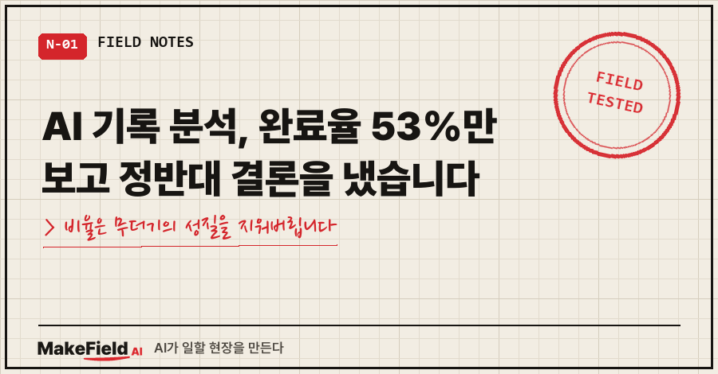
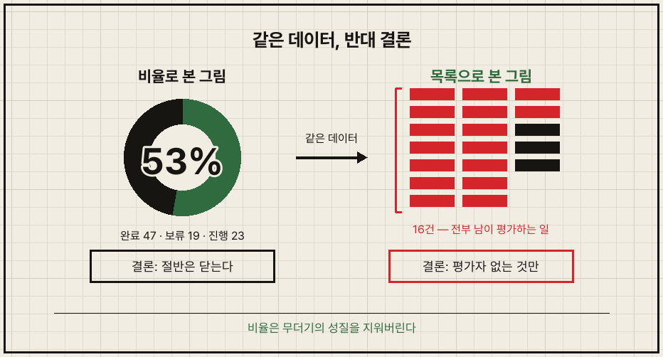
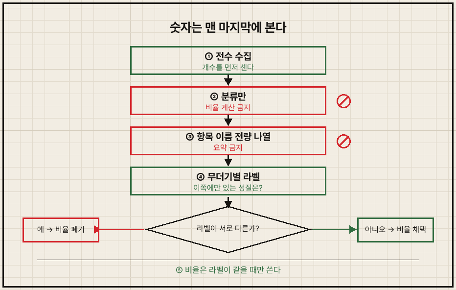
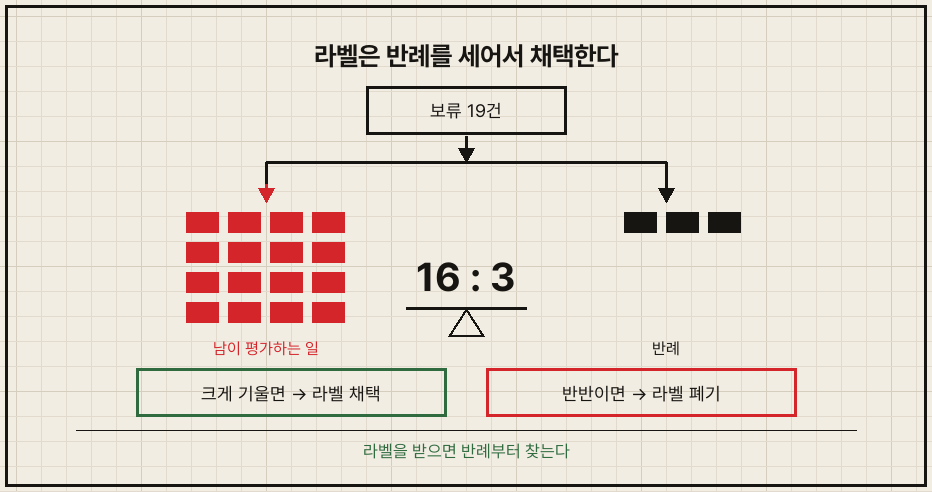

AI 기록 분석을 한번 제대로 돌려봤습니다. 반년 넘게 쌓인 제 작업 기록 파일 835개하고, 진행 중인 안건 목록 89건을 통째로 넘겼어요. 사람이 눈으로 읽을 양은 아니니까요.
30분 만에 답이 나왔고, 저는 그 답을 믿었습니다. 그리고 30분 뒤에 정반대로 뒤집었어요.
핵심만 먼저 박아둘게요.
비율은 두 무더기의 성질이 같을 때만 뜻이 있습니다. 완료율 53%는 숫자로는 맞는데, 완료된 47건과 보류된 19건이 애초에 다른 종류의 일이면 그 53%는 아무것도 설명하지 못해요. 그래서 저는 AI한테 비율을 묻는 걸 뒤로 미루고, 항목 이름부터 전부 나열시키는 순서로 바꿨습니다.
2026년 9월 기준이고요. 개인 기록을 정리하는 얘기지 특정 도구를 권하는 글은 아닙니다. 다만 AI한테 뭔가를 세게 하고 계시다면 대상이 뭐든 똑같이 걸리는 함정이에요.
제 본업은 설비 제어입니다. 도면 보고, 제어 로직 짜고, 현장에서 값 맞추는 일을 15년쯤 했어요. 이 바닥에선 합격률만 들고 오면 바로 되돌려 보냅니다. "어떤 항목이 떨어졌냐"를 안 물어보면 그 합격률은 종이 한 장이거든요. 정작 제 기록을 볼 땐 그걸 안 했습니다..
무엇을 넘겼고 첫 답이 뭐였나
넘긴 건 두 덩어리예요. 날짜별로 쌓인 작업 기록, 그리고 "이건 아직 안 끝났다"고 표시해둔 안건 목록.
세는 건 간단했습니다. 이 한 줄로 끝났어요.
(Get-ChildItem -Path .\.history -Filter *.md -File | Measure-Object).Count
# 841 (분석 시점엔 835)안건 목록 89건은 상태가 세 가지로 갈렸습니다.
| 상태 | 건수 |
|---|---|
| 완료 | 47 |
| 보류 | 19 |
| 진행 중 | 23 |
첫 답이 여기서 나왔어요. 완료 47을 89로 나누면 53%. 그러니까 절반 넘게 닫았고, 예전에 스스로 내려둔 "나는 뭔가를 자꾸 미룬다"는 진단은 데이터로 기각된다 — 이렇게요.
솔직히 듣기 좋았습니다. 그래서 더 안 따졌고요.
목록을 한 줄씩 읽었더니 뒤집혔어요
그다음에 한 게 별거 없어요. 보류 19건의 이름을 그냥 다 나열시켰습니다. 비율 말고 이름을요.
19줄을 위에서 아래로 읽는데, 16줄이 한 덩어리로 보이더라고요. 글을 공개하는 일, 심사에 신청하는 일, 얼굴 나오는 영상, 값을 받고 파는 일. 표현만 다르지 전부 같은 성질이었어요.
그럼 완료된 47은 뭐였냐. 대가가 미리 정해져 있었거나, 마감이 걸려 있어서 누가 기다리는 일이었습니다.
| 닫힌 47건 | 열린 채 남은 19건 |
|---|---|
| 대가가 정해진 일 | 공개하는 일 |
| 마감이 걸린 일 | 심사받는 일 |
| 평가자가 없는 일 | 값을 매겨 파는 일 |
두 무더기의 차이는 난이도가 아니었어요. 내 이름이 걸리고 남이 점수를 매기느냐, 딱 그거 하나였습니다. 어려워서 못 닫은 게 아니라 평가받는 자리라 안 연 거였어요.
그러니까 53%는 "절반은 해낸다"는 뜻이 아니라, "평가자 없는 일만 골라 닫았다"는 뜻이었습니다. 같은 숫자가 정반대를 가리키고 있었어요.
기록에는 이렇게 남겼습니다.
1차 분석에서 "완료율 53%이니 예전 진단은 틀렸다"고 판단했으나,
표본 오판이었음(완료된 것이 전부 마감 걸린 일). 정정 기록.
왜 비율이 거짓말을 했을까요
AI가 계산을 틀린 게 아니에요. 47÷89는 정확했습니다.
문제는 분모 안에 다른 종류가 섞여 있었다는 거예요. 성질이 다른 걸 한 통에 넣고 평균을 내면, 그 평균은 어느 쪽도 대표하지 못합니다. 통계에서 흔히 나오는 함정인데, 저는 그걸 제 기록에서 그대로 밟았어요.
그리고 이게 왜 잘 안 걸리냐면, 요약 숫자가 깔끔해서 그렇습니다. 53%는 반박할 구석이 없어 보여요. 반면 19줄짜리 목록은 지저분하고 읽기 귀찮죠. 그래서 다들 앞엣것만 받아 적습니다. 저도 그랬고요..
여러분이 AI한테 받은 요약 숫자는 어떤가요? 그 밑에 깔린 목록을 한 번이라도 펼쳐보신 적 있으신지..
그래서 분석 지시를 5단계로 바꿨습니다
지금은 이 순서로만 시킵니다. 순서가 핵심이라 중간을 건너뛰면 다시 원래대로 돌아가요.
1. 전수로 넣는다 — "최근 것 몇 개만"이 아니라 전부. 몇 개인지 먼저 세어서 숫자를 프롬프트에 박습니다
2. 분류만 시킨다 — 이 단계에서 비율 계산은 금지. "세지 말고 나눠라"
3. 각 무더기의 항목 이름을 전부 출력시킨다 — 요약 금지, 원래 이름 그대로
4. 무더기마다 라벨을 붙이게 한다 — "이 무더기에만 있고 저쪽엔 없는 성질이 뭐냐"
5. 그다음에 비율을 본다 — 라벨이 서로 다르면 비율은 쓰지 않습니다
지시문은 이 정도면 충분했어요.
1) 전체 89건을 상태별로 분류만 해라. 비율은 계산하지 마라.
2) 각 상태의 항목 이름을 하나도 빠뜨리지 말고 나열해라.
3) 각 무더기의 공통 성질을 한 문장으로 붙여라.
4) 무더기끼리 성질이 다르면 그 사실을 먼저 보고해라.확인 방법은 4단계 결과 한 줄로 갈립니다. 두 무더기의 라벨이 서로 다른 말로 나오면, 그 비율은 버리는 게 맞아요. 라벨이 같은 말로 나올 때만 비율이 뜻을 갖습니다. 이 판정을 안 하면 3단계까지 잘해놓고 마지막에 다시 속아요.

자주 걸리는 질문 셋
Q. 처음부터 "전수로 분석해"라고 하면 되지 않나요?
그것만으론 안 되더라고요. 전수로 읽어도 출력이 요약이면 결과는 똑같습니다. 저도 전수로 넣었는데 첫 답이 53%였어요. 관건은 입력량이 아니라 출력 형태예요. 이름을 나열하게 만들어야 무더기가 눈에 보입니다.
Q. 항목이 수백 개면 나열이 감당이 되나요?
안 되죠. 그래서 저는 상태별로 쪼개서 제일 작은 무더기부터 나열시킵니다. 이 건도 19줄부터 폈어요. 그리고 보통은 작은 쪽에 답이 있습니다. 잘 안 되는 일이 모여 있는 자리라서요.
Q. AI가 붙인 라벨이 틀리면요?
저는 라벨을 받아 적고 반례를 하나 찾아봅니다. "이 성질에 안 맞는 항목이 이 무더기에 있나?" 이 건에선 19건 중 3건이 라벨 밖이었어요. 16 대 3이면 라벨을 채택하고, 절반쯤 어긋나면 라벨을 버립니다.

정리
- AI 기록 분석은 요약 숫자를 먼저 받는 순간 결론이 미리 정해집니다
- 비율보다 항목 이름이 정보량이 많아요. 지저분한 쪽에 답이 있습니다
- 분모에 성질이 다른 게 섞여 있는지부터 확인하고, 섞였으면 그 비율은 버리세요
숫자가 틀려서 속은 게 아니라 맞아서 속았습니다. 계산이 정확하면 검산할 생각이 안 들거든요. 이제는 AI가 퍼센트를 들고 오면 "그 밑에 목록 펼쳐줘"부터 칩니다! 한 줄 더 치는 값으로 결론이 통째로 뒤집힌 적이 벌써 한 번 있으니까요.
이런 분석 지시문이랑, 제가 틀렸던 판정들은 makefield.ai에 그대로 모아두고 있습니다.
태그: #AI기록분석 #AI통계착시 #AI데이터집계 #AI전수분석 #AI완료율 #AI분석지시 #AI결과물검수 #AI에게일시키기 #AI판단검증 #AI기록관리 #AI지식관리 #AI비서만들기 #AI활용법 #AI실무활용 #MakeFieldAI